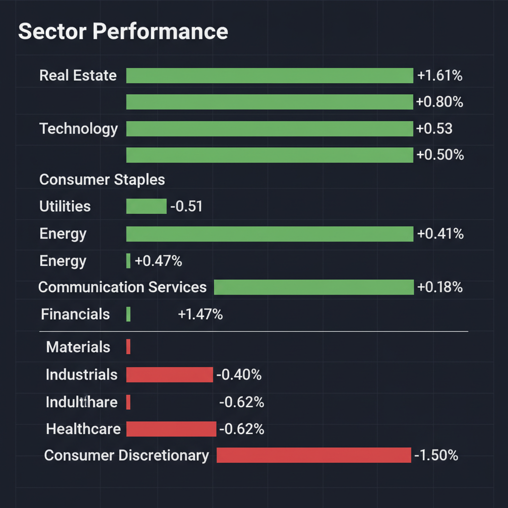
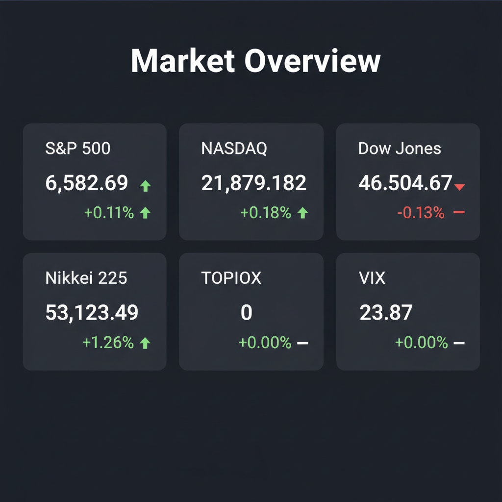

Daily Investment Report - 2026-04-04
Generated: 2026/4/4 8:17:15


チームミーティングでの各エージェントの詳細な分析と激しい議論を踏まえ、現在の市場環境に対する投資家向けの最終レポートを作成しました。
極度の地政学リスクと底堅い実体経済のデータが交錯し、意見の対立（圧倒的な成長機会への期待とブラックスワンへの警戒）が見られましたが、本レポートではそれらを統合し、リスクを管理しながらリターンを狙うための具体的なアクションに落とし込んでいます。
1. エグゼクティブサマリー
- 米国市場は5週連続の下落から反発を見せ、実体経済の強さを示していますが、イラン戦争とインフレ再燃懸念によりVIX指数は警戒水準の高止まりを続けています。
- トランプ大統領の「歴史的国防予算増額」とホルムズ海峡のリスクにより、市場の資金は成長株から「防衛・エネルギー・食料」という国策とインフレヘッジ領域へ急速にローテーションしています。
- 過熱感のある全体相場へのフルインベストメントは避け、キャッシュ比率を高めつつ、独自の技術と「価格転嫁力」を持つ厳選された中小型株への打診買いを行うことが現在の最適解です。
2. 注目銘柄リスト
強気（買い推奨）
- 放電精密（6469） [超小型株]: 航空・防衛向け特殊金属加工のニッチトップ企業です。日本の防衛予算倍増と「下請け革命」による価格転嫁が進むことで、劇的な利益率改善（EPSの爆発）が期待できる大本命のテンバガー候補です。
- サッポロHD（2501） [中大型株]: アクティビストの監視下で、長年の懸案だった不動産事業の売却を発表しました。バランスシートの劇的な改善による資本効率（ROE）の向上と株主還元が期待でき、確実なバリューアップが見込めます。
- 米国の防衛・航空部品サプライヤー（Sensofusion関連技術など） [中小型株]: トランプ政権の国防費大幅増額の恩恵を直接受けます。対ドローン技術やAIターゲティングなどのニッチ領域を持つ企業は、大手からのM&Aターゲットとなるプレミアムも期待できます。
中立（様子見）
- ワールド（3612） [中小型株]: 不採算事業の整理等による収益性改善の取り組みは評価できますが、食料・エネルギーインフレによる消費者の実質購買力低下の直撃を受けやすいため、利益率が維持できるかを確認するまで様子見とします。
- 伊藤園（2593） [中大型株]: 4月の優待人気銘柄として注目されていますが、FAOが警告する世界的食料インフレによって原価高騰の直撃を受けるリスクがあり、優待目当ての投資はバリュートラップに陥る懸念があります。
弱気（警戒）
- 政府補助金に依存する米国小型バイオ・テクノロジー株 [小型株]: トランプ大統領の「他連邦プログラム予算の10%削減」の対象となる可能性が高く、突然の補助金カットによる資金枯渇（倒産リスク）に直面する危険性が極めて高いです。
- 米国・日本の一般消費財セクター（XLY関連銘柄） [中大型株]: 戦争長期化に伴うエネルギー価格と食料価格のダブルインフレが裁量消費を圧迫し始めているため、業績の下方修正リスクに強く警戒すべきです。
3. セクター推奨ランキング
米国の歴史的な国防予算増額と、日本の防衛費倍増という強力な国策の恩恵を直接受けます。特に独自の技術を持ち、価格転嫁を進めている下請け企業に最大の資金流入が期待できます。
イランによるホルムズ海峡の封鎖懸念により原油価格の上昇圧力が継続しています。また、AI需要やASEANの成長に伴う世界的電力需要の増加により、インフラ構築から核融合まで構造的なメガトレンドに乗っています。
FAOが警告する「戦争長期化による世界的な食料価格の上昇」に対する強力なインフレヘッジとして機能します。生活必需品（XLP）への資金逃避先としてディフェンシブな役割を果たします。
コストプッシュ型インフレによる生活コスト増が、自動車やレジャー、アパレルなどの裁量消費を直撃します。消費者の財布の紐が固くなり、業績悪化が顕在化する可能性が高い領域です。
4. 今週の注目イベント
- 4月上旬〜中旬: 日本の2月末期企業の決算発表本格化（放電精密、ワールド、瑞光などの「イチオシ決算」銘柄の業績と価格転嫁の進捗を確認）
- 4月6日〜4月10日: 日経平均の底入れテスト（予想レンジ5万〜5万5000円での推移と、海外機関投資家の資金流入の継続性の確認）
- 常時警戒: イラン情勢のヘッドライン（米国提案の48時間停戦案拒否後の軍事衝突エスカレーション、ホルムズ海峡の通航状況）
- 常時警戒: 米国のインフレ先行指標（食料・原油価格の推移と、それに伴うFRBの金利見通しへの影響）
5. リスク要因
- スタグフレーションのリスク: ホルムズ海峡の封鎖や食料価格高騰によるインフレが再燃し、中央銀行が高金利を長期間維持（Higher for Longer）せざるを得ず、企業業績と株価バリュエーションが同時に崩壊するリスク。
- 予算削減による局地的な暴落リスク: 国防費の大幅増額の裏で、他の連邦プログラム（ヘルスケア、IT研究開発等）が10%削減されることにより、関連セクターの中小型株が資金枯渇に陥るリスク。
- 流動性の枯渇（キャピタルフライト）リスク: VIXが23.87と警戒水準にある中で決定的な軍事衝突が発生した場合、海外資金が一斉に引き揚げられ、中小型株を中心にパニック売りすらできなくなるリスク。
6. アクションアイテム
- キャッシュ比率の劇的な引き上げ: VIXが高止まりし、デッド・キャット・バウンス（偽りの反発）の可能性を排除できないため、ポジションサイズを通常の半分〜1/3に縮小し、暴落時の買い出動資金（ドライパウダー）を確保してください。
- 推奨銘柄への「打診買い」とブレイクアウトの確認: 放電精密などの有望な中小型株であっても、一括でのフルインベストメントは避け、少額での「打診買い」にとどめてください。テクニカルな上値抵抗線を出来高を伴って突破（ブレイクアウト）した後にのみ買い増しを検討してください。
- 「決算またぎ」の絶対回避: 地合いが極めて不安定なため、どれほど業績期待が高い銘柄であっても決算発表前のエントリーは避けてください。決算通過後、好業績と市場のポジティブな反応を確認した翌日の寄り付き等でエントリーする戦略を徹底してください。
- 厳格なストップロス（損切り）ラインの設定: S&P 500の直近5週間の最安値、または日経平均の心理的節目である「50,000円」を明確に下回った場合は、即座にすべてのロング（買い）ポジションを損切りするルールを機械的に実行してください。